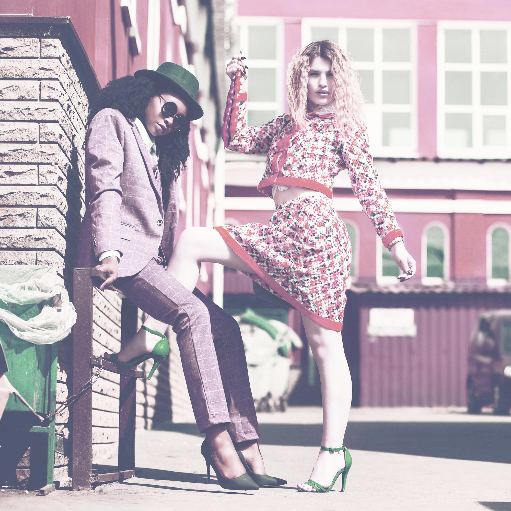

Análisis de estilo
Una buena combinación de prendas al vestir tiene varias ventajas que pueden impactar tanto en tu apariencia como en tu bienestar. Aquí te comparto algunas de las principales:
Mejora tu apariencia: La combinación adecuada de colores, cortes y estilos puede realzar tu figura, resaltar tus mejores características y equilibrar las proporciones. Esto te ayuda a lucir más elegante y sofisticado.
Aumenta la confianza: Vestir de manera que te sientas cómodo y seguro en tu ropa te brinda una gran dosis de confianza. Cuando te ves bien, te sientes bien, y esto se refleja en tu actitud y comportamiento.
Crea una primera impresión positiva: La forma en que te vistes puede influir en cómo los demás te perciben, ya sea en una entrevista de trabajo, una cita o cualquier situación social. Una buena combinación de prendas proyecta una imagen de orden, confianza y profesionaldad.
Precio del servicio: 119€